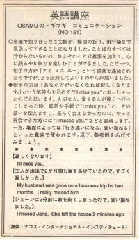

さびしくなります。
当地で知り合ったご夫婦が帰国の折り、飛行場まで見送って下さることになりました。お二人とは言葉のすべてはわからなくても推測を加えて、心に残るやり取りを楽しむことができたと思います。しかし、唯一つ、お二人が、「アイ ミス ユー」という言葉を連発されたのですが、どう応対していいものやら戸惑いました。
相手の方は、「あなた方がいなくなれば、さびしくなります」という気持ちをこめて、I'll miss you. とおっしゃったのだと思います。大切な人が遠くへ行ってしまった時、電話や手紙で、I miss you. と、その思いを伝えますし、長らく会えなかったのに、やっと会えた時には、I missed you. などと表現します。一方、場面によっては、「行き違いになる、会いそこねる」といった意味で使われます。以下、参考例をあげてみましょう。
さびしくなります。
I'll miss you.
主人が出張で２ヶ月も家をあけていたので、すごくさびしかった。
My husband was gone on a buisness trip for two months. I really missed him.
ジェーンは２分前に家を出てしまったので、会いそこねました。
I missed Jane. She left the house 2 minutes ago.

| © 1995-2013 NACOS International Institute. All Rights Reserved. |